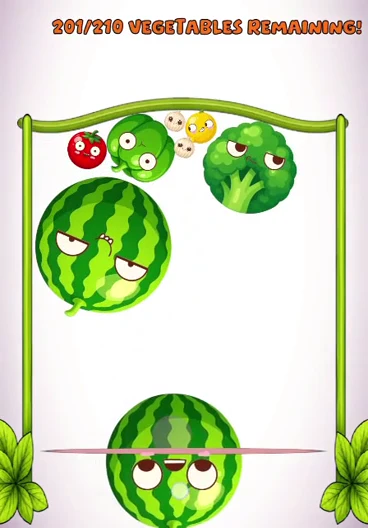

FIRESTORE / LEADERBOARD CAPTURE

FEATURED PROJECT 01
Pumpkin.
Physics-based 2D merge game
Launch vegetables, combine matching pairs, and work your way toward a pumpkin. A Firestore leaderboard connects scores to round rankings and player UI, supported by shared state, coordinated loading, and dedicated gameplay behaviours.
- Development
- Solo game development
- Focus
- Gameplay architecture & Firebase